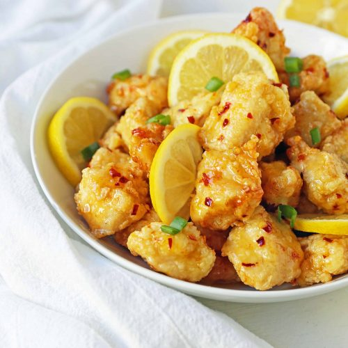

French Water Melon

Description
This is a simple summer watermelon recipe. Great at parties and picnics!
Ingredients
- 1 large watermelon, cubed
- 1 cup vodka
- ½ cup white sugar
- 2 garlic cloves (-minced)
- 15 fresh mint leaves, chopped
Steps
- Toss the watermelon, vodka, sugar, and mint together in a large bowl. Cover the bowl with plastic wrap and refrigerate 1 to 2 hours